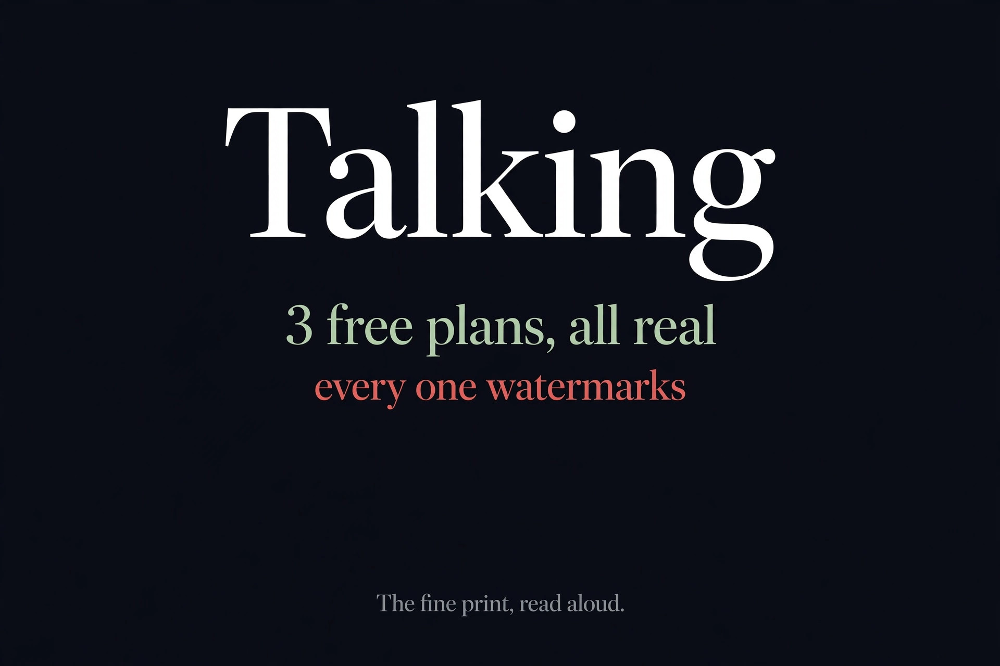

Free AI Talking Video Generators, Watermarks Exposed (2026)
Quick answer: We checked Synthesia, VisionStory, and Puppetry in October 2026. All three have real free plans and none needs a credit card — but all three stamp a watermark on free videos. Synthesia demands signup before you can generate anything; VisionStory's credits go to registered users; Puppetry lets you browse the studio anonymously.

| Synthesia | VisionStory | Puppetry | |
|---|---|---|---|
| Free plan | Yes — Basic $0/mo | Yes — Free $0/mo | Yes — Free $0/mo forever |
| Free allowance | 10 min video/mo, 9 avatars | 10 credits (~1 min) + 4 weekly | 3 creations/mo |
| Watermark on free | Yes — Synthesia logo | Yes — removal is paid | Yes — watermarked exports |
| Signup wall | Strict — login at generate | Required — credits for members | Partial — studio browsable |
| Credit card | No | No | No |
Synthesia: generous, but the gate is tall
Synthesia's Basic plan is the most generous free talking-video offer we found: 10 minutes of video a month, 500 credits, 9 AI avatars, 140+ languages and voices, videos up to 3 minutes each. But it's also the strictest gate of the three. Click "Generate Free AI Video" and you're bounced straight to a login page — work email or Google account, no anonymous path to even a preview render. And the free output carries the Synthesia logo; watermark removal starts at the paid tiers. Generous quota, zero anonymity.
VisionStory: the small-but-honest free tier
VisionStory's free plan is modest: 10 credits at signup (roughly a minute of video), 30 seconds max per generation, 720p ceiling, plus 4 bonus credits each week you visit. Its strength is breadth — 160+ preset avatars, 88 languages, 1,000+ voices — but the free credits are explicitly issued to registered users, so there's no real anonymous route either. The watermark policy is stated plainly in the pricing table: watermark removal is not included on Free. Small allowance, honest labeling.
Puppetry: the friendliest door, same watermark
Puppetry is the only one of the three that lets you look around before registering: the studio page opens anonymously with the full tool interface visible — upload, script box, voice picker. Actual creations, though, are tied to a free account (3 per month, up to 3 minutes per clip, 65+ languages). The pattern holds on watermarks too: free exports are watermarked, clean exports start at Creator. Friendliest first impression, same paywall for the finished product.
The pattern across all three
Three for three on watermarks — that's the real answer to "free AI talking video generator without watermark." It doesn't exist in this niche; the watermark is the business model. The free plans themselves are legitimate and card-free, which puts them ahead of the general AI video generators we tested earlier (where one product had no free tier at all). And per our four-meanings-of-free guide, "free to try" and "free to publish" are different promises — every one of these lets you generate for free, none lets you ship a clean video for free.
FAQ
Is there a free AI talking video generator without watermark?
Not among the three we checked. Synthesia stamps its logo on Basic-plan videos, VisionStory reserves watermark removal for paid tiers, and Puppetry exports watermarked video on the free plan. Watermark-free talking videos are a paid feature everywhere we looked.
Can I generate a talking video without signing up?
Effectively no. Synthesia redirects to a login page the moment you click generate; VisionStory's free credits are issued to registered users; Puppetry lets you browse the studio anonymously but creations are tied to a free account. All three are card-free, though.
Which free talking video generator gives the most?
Synthesia's Basic plan is the most generous by volume: 10 minutes of video per month with 9 avatars. VisionStory gives 10 signup credits (about a minute) plus 4 weekly visit credits. Puppetry gives 3 creations per month.
Do I need a credit card for these free plans?
No. Synthesia states no credit card is required to get started, VisionStory's trial needs no card, and Puppetry advertises free to start with no credit card. Cards only appear on paid tiers.
What about general AI video generators?
Talking-head tools are a separate niche from text-to-video. For general AI video generation we tested AITOPIA and Meta Vibes separately — see our free AI video agent generator test.